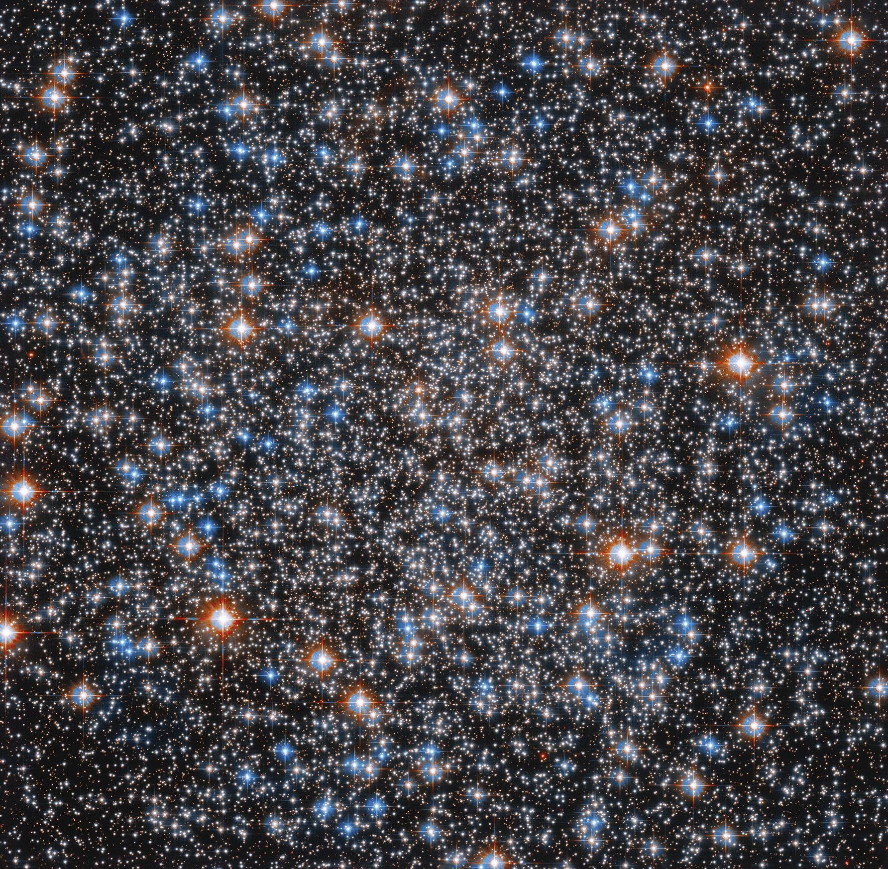
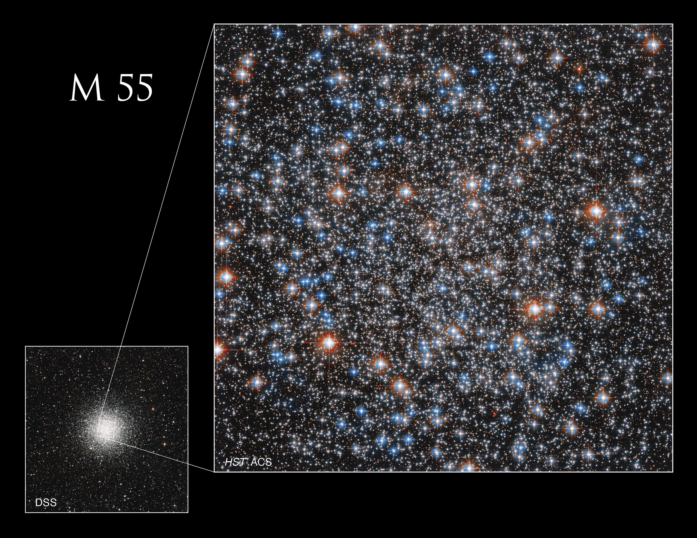

Messier 55
This image shows just a portion of M55, the cluster as a whole appears spherical because the stars’ intense gravitational attraction pulls them together. Hubble’s clear view above Earth’s atmosphere resolves individual stars in this cluster. Ground-based telescopes can also resolve individual stars in M55, but fewer stars are visible.
Credits: NASA, ESA, A. Sarajedini (Florida Atlantic University), and M. Libralato (STScI, ESA, JWST); Image Processing: Gladys Kober
Even the great observer Charles Messier had trouble seeing this globular cluster when building his Catalog of Nebulae and Star Clusters. It was originally spotted in 1752 by a French astronomer in what is now South Africa, but it took until 1778 for Messier to catalog it.
This is because, while Messier 55 is large and reasonably bright, it is lacking a dense core and many of its stars are quite faint, making it hard to observe in non-optimal conditions.
For northern observers M55 sits low in the sky, so the view is hampered by a thicker layer of atmosphere, as well as water vapor and light pollution. This hindered Messier’s view from his Paris observatory. When he cataloged it, Messier noted that “its light is even and does not appear to contain any star.”
Though this image shows just a portion of M55, the cluster as a whole appears spherical because the stars’ intense gravitational attraction pulls them together. Hubble’s clear view above Earth’s atmosphere resolves individual stars in this cluster. Ground-based telescopes can also resolve individual stars in M55, but fewer stars are visible.
Even in skies with low light pollution, viewed through binoculars, the cluster will only appear as a round hazy patch. Small telescopes can begin to resolve individual stars in M55, while larger aperture telescopes will pick out low magnitude stars easily. The star cluster is found in the southern part of the constellation Sagittarius and is easiest to spot in August.
The globular cluster is about 20,000 light-years away and has a diameter of about 100 light-years. It contains an estimated 100,000 stars with 55 variable stars whose brightness changes.
The smaller, ground-based image (lower left) taken by the Digital Sky Survey illustrates the area of Messier 55 that Hubble observed.
Credits: NASA, ESA, A. Sarajedini (Florida Atlantic University), M. Libralato (STScI, ESA, JWST), and Digital Sky Survey; Image Processing: Gladys Kober

This star chart for M55 represents the view from mid-northern latitudes for the given month and time.
Credits: Image courtesy of Stellarium
Last Updated: Mar 17, 2023
Editor: Andrea Gianopoulos